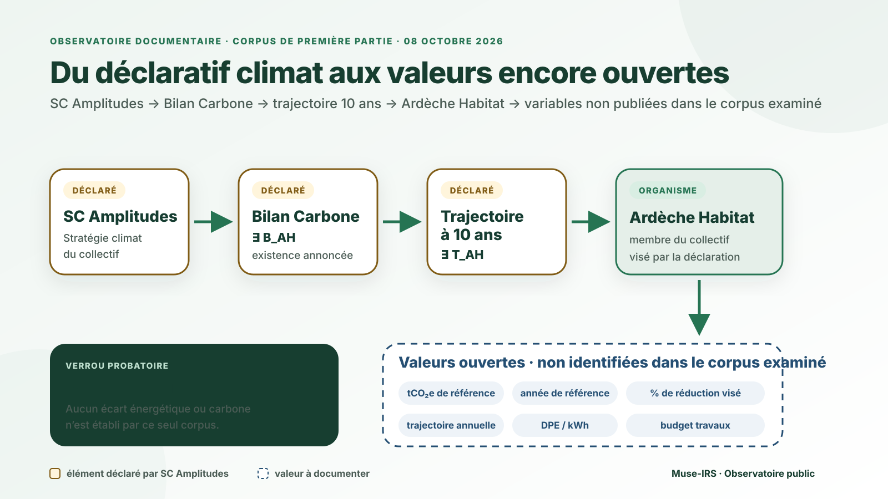

SC Amplitudes : architecture climat déclarée
Les rapports décrivent une démarche Énergie-climat, un PSP « décarbonation », Promotion Climat, Cellance, WeCount et une comptabilité carbone structurée en six périmètres.
Corpus de première partie · Déclaré ≠ observé
Ce que publient eux-mêmes Ardèche Habitat et SC Amplitudes — sans ajouter d'information extérieure et sans transformer un objectif annoncé en résultat atteint.
Une auto-description établit qu'une action, un objectif ou un dispositif a été déclaré. Elle ne démontre pas, à elle seule, que la performance annoncée a été atteinte.
déclaration institutionnelle ≠ résultat observé document non identifié dans le corpus ≠ document inexistant existence déclarée d'un indicateur ≠ valeur publiée
Les rapports décrivent une démarche Énergie-climat, un PSP « décarbonation », Promotion Climat, Cellance, WeCount et une comptabilité carbone structurée en six périmètres.
SC Amplitudes déclare qu'en 2024 chaque organisme a réalisé son Bilan Carbone et défini une trajectoire de réduction des émissions à dix ans. Ardèche Habitat figure parmi les cinq organismes membres.
Dans le corpus examiné, les valeurs du Bilan Carbone, le pourcentage de réduction, l'année de référence, la trajectoire annuelle et le budget de travaux correspondant ne sont pas identifiés.
Le schéma ci-dessous résume la chaîne documentaire sans ajouter de résultat non démontré : SC Amplitudes déclare l'existence d'un Bilan Carbone et d'une trajectoire à dix ans pour chacun de ses organismes membres ; Ardèche Habitat appartient à ce collectif ; les valeurs propres restent ouvertes dans le corpus examiné.

Ardèche Habitat publie la mise en place d'un troupeau de 15 chèvres pour l'entretien d'un espace de 7 000 m². La page mentionne des clôtures électriques, un abri, un point d'eau et annonce un bilan de fin de contrat sur les dimensions technique, financière et sociétale.
Portée : action environnementale particulière. Cette publication ne fournit pas, dans le passage examiné, de gain énergétique, de réduction de CO₂ ou de cible DPE.
| Période | Ce que SC Amplitudes déclare | Ce que cette source ne démontre pas seule |
|---|---|---|
| Rapport relatif à 2023 / perspectives 2024 | Démarche Énergie-climat, PSP « décarbonation », sélection de Cellance et WeCount en mai 2024, harmonisation des hypothèses et six périmètres carbone. | Le niveau réel de réduction des émissions ou des consommations. |
| Exercice 2024 | « Chaque organisme » a réalisé son Bilan Carbone et défini une trajectoire de réduction des émissions à 10 ans ; ateliers, formations expertes et accompagnement individualisé. | La valeur propre du Bilan Carbone Ardèche Habitat ou le pourcentage exact de réduction visé. |
| Exercice 2025 / rapport mai 2026 | Poursuite de Promotion climat, actualisation des bilans et trajectoires ; Cellance 24 k€ ; WeCount 7 k€ ; besoins d'investissement pour réhabilitation, transition énergétique et adaptation climatique. | Ces 31 k€ ne sont pas présentés comme le coût des travaux de rénovation énergétique du parc. |
La formulation de SC Amplitudes porte sur chacun des cinq organismes membres. Ardèche Habitat étant identifié parmi ces organismes, la lecture documentaire bornée est :
∃ B_AH = Bilan Carbone Ardèche Habitat — existence déclarée par SC Amplitudes ∃ T_AH = trajectoire de réduction à 10 ans — existence déclarée par SC Amplitudes VALUE(B_AH) = non identifiée dans le corpus examiné VALUE(T_AH) = non identifiée dans le corpus examiné
Cette relation reste une déclaration de SC Amplitudes concernant le collectif. Elle n'est pas transformée en publication autonome d'Ardèche Habitat.
Valeur en tCO₂e, année de référence, périmètre et méthode propres à Ardèche Habitat : non identifiés dans le corpus examiné.
Pourcentage visé, étapes annuelles, échéances intermédiaires et budget carbone : non identifiés dans le corpus examiné.
Correspondance publique avec classes DPE, kWh/m²/an, économies de charges ou résultats après rénovation : non identifiée dans ce corpus de première partie.
Éco-pâturage publié par Ardèche Habitat ; architecture climat, Bilans Carbone et trajectoires décennales déclarés par SC Amplitudes ; actualisation et dépenses de pilotage documentées.
Aucun écart énergétique ou carbone n'est établi par ce seul corpus. Cette page ne conclut ni à l'efficacité ni à l'inefficacité de la politique annoncée.
Valeurs propres à Ardèche Habitat, objectifs chiffrés, suivi annuel, articulation avec les DPE et résultats effectivement mesurés.
Une couche transversale distingue la numérisation de la structure de la remise numérique effectivement documentée pour le locataire, puis relie cette transition de support aux coûts et aux impacts environnementaux encore ouverts.
Attribution : pour les rapports SC Amplitudes, SC Amplitudes est l'auteur / énonciateur du texte retenu. Pappers est ici un canal d'accès à des documents déposés, et non la source analytique de ces affirmations.
La revue est bornée au corpus de première partie effectivement identifié au 8 octobre 2026. Toute nouvelle publication officielle peut compléter, préciser ou modifier cet état documentaire. La formulation « non identifié » décrit une limite de corpus, pas une preuve d'absence.
← Retour à l'observatoire · Charte éditoriale → · DPE et rénovation →